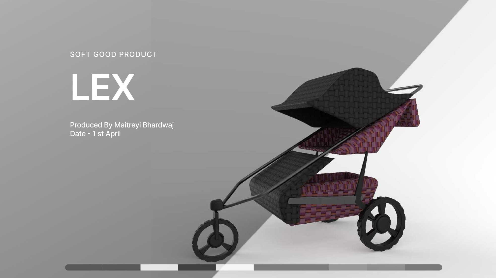

A soft good product. A quilted textile canopy and seat for an urban jogging stroller, made to keep up with parents who run, walk and explore the city.Soft goods for the Thule Urban Glide.
01
The audience is urban parents and caregivers who lead active lives and need a versatile, high-quality stroller that keeps up with their daily routine: jogging, walking and exploring the city with their child.
02
I sketched the frame, canopy and basket together, so the fabric follows the structure instead of covering it.
03
The frame was modelled first, then the soft parts: a quilted canopy, seat and basket in a geometric weave.